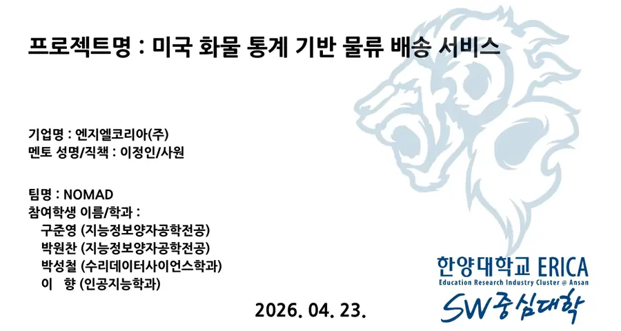
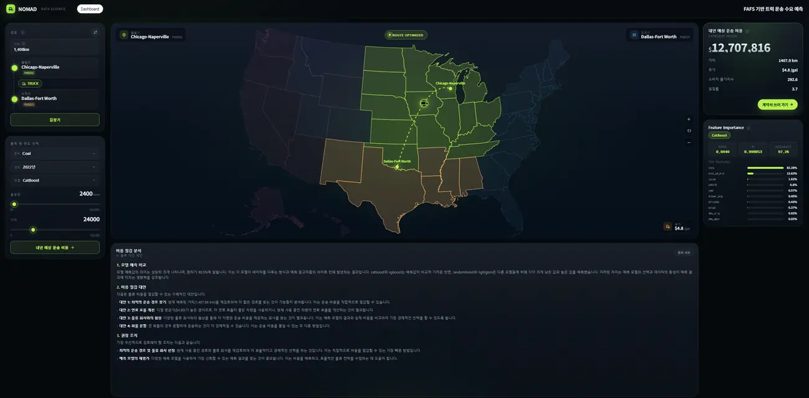
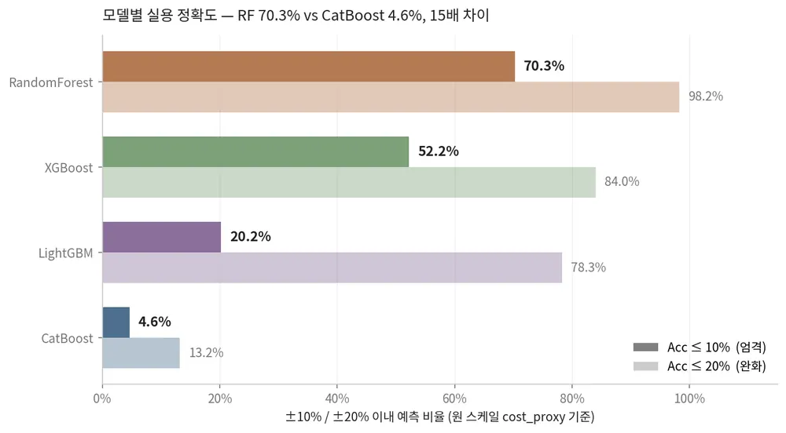
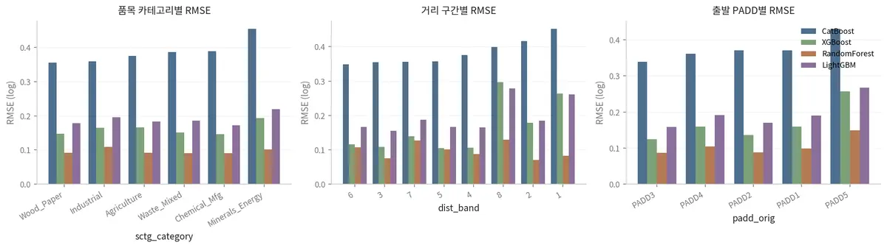

배경
한양대학교 인공지능학과 데이터사이언스 강의에서 미국 종합물류기업 NGL Transportation의 한국지사 NGL Korea가 실제 과제를 냈습니다. 미국 화물 통계 데이터를 활용한 데이터 분석과 AI를 결합한 결과물을 제시하는 것.
미국 화물 통계(FAF5) 데이터를 활용해 주문 지역과 상품 정보가 주어지면 운송 비용을 예측하고 추천 정보를 제공하는 시스템입니다.
02 / 프로젝트 개요
미국 물류의 중심은 트럭입니다. 미국 화물 이동의 주요 운송 수단인 트럭 데이터를 활용해, 감에 의존하던 운송 의사결정을 데이터 기반으로 개선하는 것이 이 프로젝트의 목적이었습니다.

03 / 진행한 일
한양대학교 인공지능학과 데이터사이언스 강의에서 미국 종합물류기업 NGL Transportation의 한국지사 NGL Korea가 실제 과제를 냈습니다. 미국 화물 통계 데이터를 활용한 데이터 분석과 AI를 결합한 결과물을 제시하는 것.
단순 거리 기반 추천은 실제 운송비와 물류 흐름을 충분히 반영하지 못합니다. 같은 거리라도 품목, 유가, 경기에 따라 비용이 크게 달라지기에, 현실적인 비용 예측과 배송 추천 구조가 필요했습니다.
FAF5의 출발지/목적지, 품목, 거리 구간, 물동량, 운송 가치에 유가 데이터, 거시경제지표, 인구·이동 같은 외부 데이터를 결합했습니다. 2017~2022년치 데이터를 통합해 현실성을 보완한 예측 모델을 개발했습니다.
04 / 과정
제가 맡은 핵심 역할은 데이터 전처리였습니다. 미국 화물 통계와 외부 데이터를 결합해 예측과 추천에 바로 쓸 수 있는 통합 데이터셋을 만들었습니다.
연도별 출발지·목적지, 품목, 거리 조합 단위로 데이터를 재구성했습니다.
물동량, 가치, ton-miles, 유가, 인구/이동 변수를 한 행에 통합했습니다.
거리, 비용, 가치밀도 관련 파생 변수를 만들어 모델의 표현력을 높였습니다.
Feature 간 VIF 다중공선성을 검사해 정보가 겹치는 Feature는 배제했습니다.
Optuna 프레임워크로 4개 모델 각각의 최적 하이퍼파라미터 조합을 탐색했습니다.
05 / 결과물
경로, 품목, 운송량, 연도를 입력하면 CatBoost, XGBoost, RandomForest, LightGBM 4개 모델의 분석 결과를 보여주고, llama-3.3-70b를 호출해 비용 절감 대안과 권장 조치까지 설명해 주는 웹앱을 개발했습니다.



06 / 배운 점
미국 화물 통계처럼 큰 데이터를 다룰 때는 메모리 관리가 분석 그 자체만큼 중요하다는 것을 깨달았습니다.
팀 내에 언어적 소통의 어려움이 있을 때는 예시 결과물을 직접 보여주며 설명하는 것이 가장 효율적이었습니다.
07 / 나의 역량
4명의 소규모 프로젝트임에도 의사소통의 사소한 오류로 전혀 다른 결과물이 나올 수 있다는 것을 깨달았습니다. 언제나 서로의 이해 내용을 확인하고, 사소한 오류라도 바로잡아야 합니다.
주기적인 미팅과 전문가의 도움은 결과물의 완성도를 크게 높였습니다. 팀원 간의 미팅을 중요하게 생각하고, 도움을 요청하는 데 망설이지 않는 것 또한 능력이라고 믿습니다. 이 태도로 팀에 기여하겠습니다.